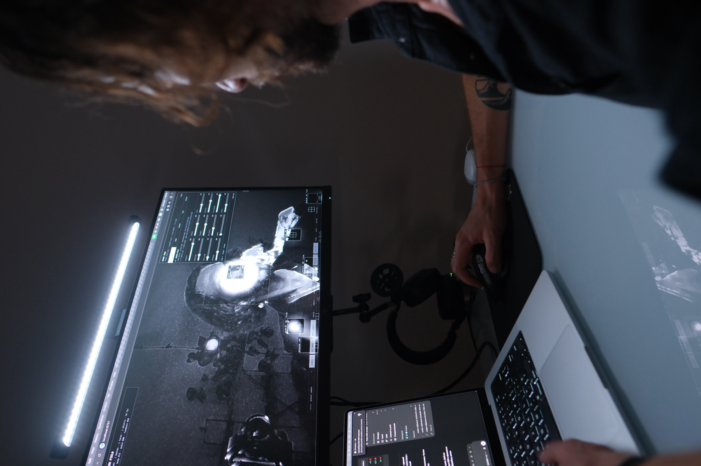
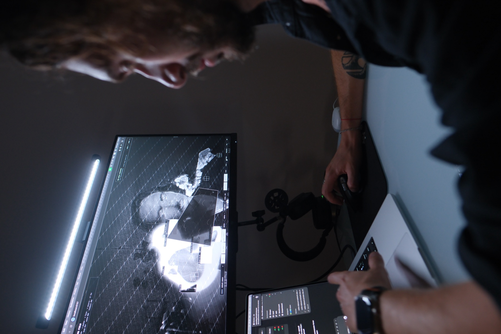
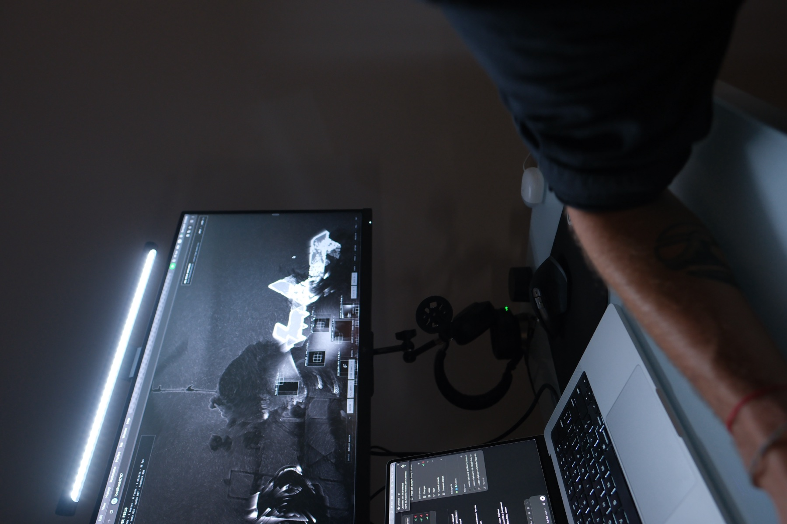
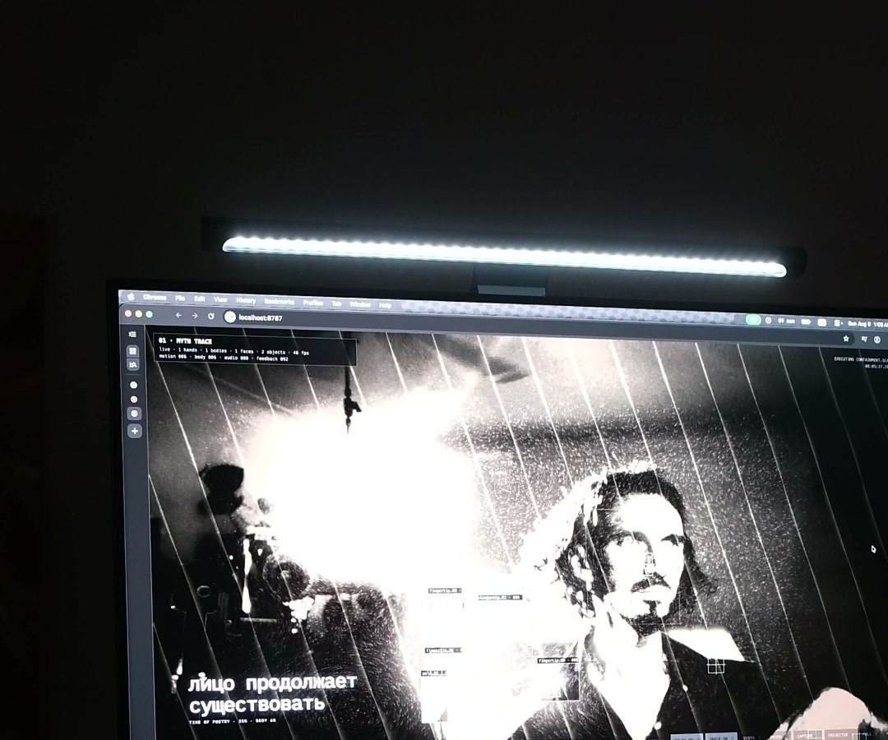
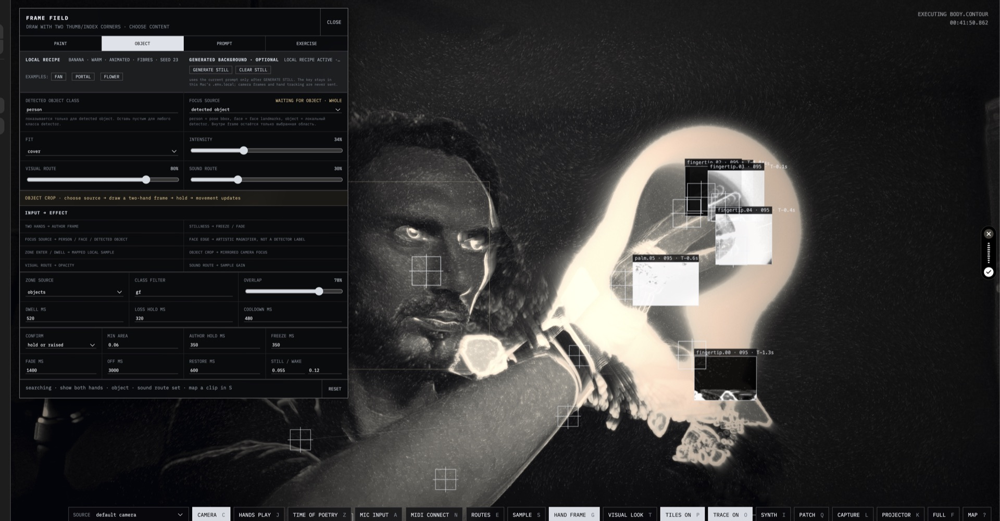
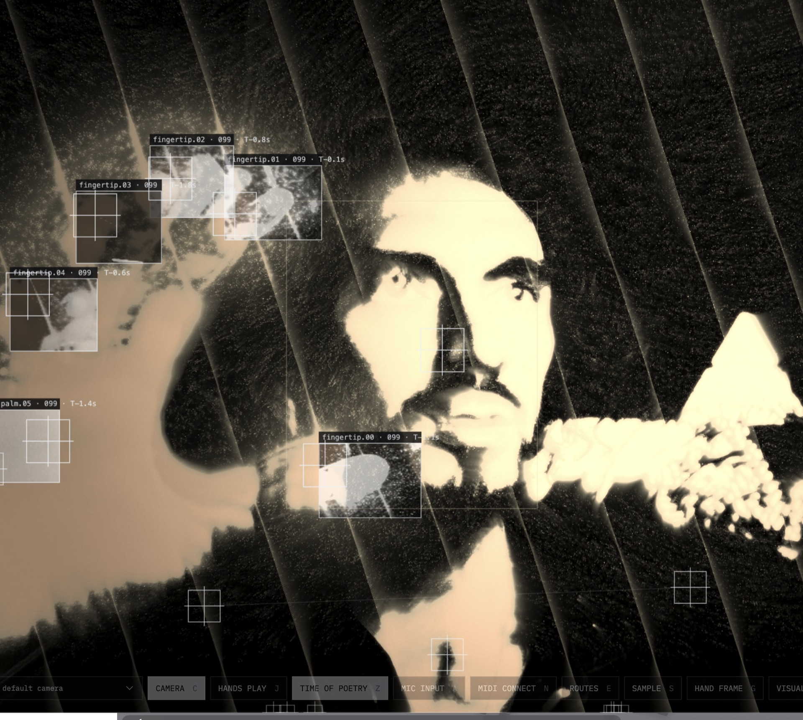
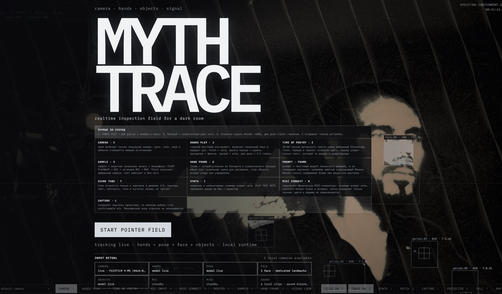
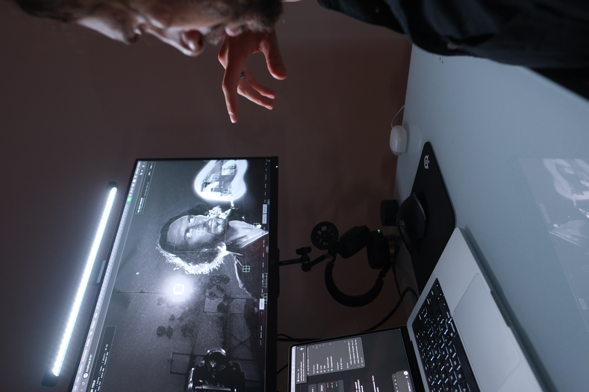

§ 01 · как это началось
камера. проектор. тело.
Я включил камеру дома и вышел в поле проектора. Поднял руку – появился звук. Замер – лицо осталось висеть в последней точке. Так собрался MYTH TRACE.
bodyконтур + скорость
handspinch + spread
facecrop + memory
objectframe + dwell
stillnesshold + absence
§ 02 · каково быть агентом?
пока ты движешься,я знаю, где ты.пауза становится памятью.
Машина видит меня точками. Жест запускает звук. Лицо остаётся в рамке. Тишина стирает след. Где-то здесь начинается вопрос: каково быть агентом?
слушать мой голос ↓



face.00 · holdfingertip.03 · signalperson.01 · field local performance excerpt12.0 s · muted visual loop
движение рисует. пауза сохраняет.
Я двигался перед проектором и смотрел, как комната учится за мной повторять.
§ 03 · причинная грамматика
Четыре сигнала. Четыре точных ответа системы.
развёл руки – собрал кадр.
двинулся быстрее – поле усилилось.
исчез – последняя точка осталась.
§ 04 · live evidence
интерфейс вышел на сцену.
Рамки, координаты и задержанные фрагменты стали частью изображения. Зритель видит, что система измерила и что успела запомнить.




§ 05 · система релиза
одна сцена. пять способов показать тело.
Каждая рамка собрана из реального кадра Myth Trace. Геометрия меняет дистанцию до тела, сохраняя жест, голос и причинную цепочку.
что зафиксированоисходный голос · финальный текст · карта причинности · размеры экспорта · манифест · контрольная сумма
собери свою версию myth trace.Скилл описывает путь от текста и голоса до трекинга, WebGL-поля, записи и релиза. Инструмент открывает уже собранную сцену для камеры, рук, MIDI и проектора.
§ 06 · как это работает
один жест проходит через всю систему.
Пальцы сближаются. Модель отдаёт координаты. Одна причинная цепочка меняет свет и звук; исчезновение управляет памятью кадра.
01 · gesturepinchпальцы пересекают порог
02 · modellandmarksMediaPipe отдаёт координаты
03 · signalevent + rangeжест превращается в число
04 · scenelight + noteчисло меняет поле и звук
05 · memoryhold + fadeпауза удерживает след
why the interface stays visible
я оставил взгляд машины в кадре.
Рамка показывает её внимание. Задержанный фрагмент – память. Тишина – момент, когда тело исчезло.
«каково быть агентом?» ↓MediaPipe Tasks VisionWebGL2 / GLSLCanvas2DWeb AudioWeb MIDIMediaRecorderffmpegPlaywright
pinchDown → event.noteOn
hand.y → range.filter
hand.speed → range.feedback
stillness → state.hold
absence → state.fade§ 07 · авторский голос
каково быть агентом?
«я режу тебя на квадраты, чтобы придать форму сигналу. мы встречаемся в квадрате, который оба называем лицом.»
Это мой обработанный source voice и зафиксированный текст. Он проигрывается один раз по кнопке. Жесты меняют свет и звук, а исчезновение удерживает последнюю координату. Голос не зависит от случайного движения.
AUTHOR VOICE · BODY CODECexplicit playback
каково быть агентом?Александр Поваляев · processed source voice
ты замираешь. лицо продолжает существовать в последнем месте, где я тебя увидел.
Звук запускается только по клику · камера и микрофон этой страницы не используются
§ 08 · skill / portable score
забери
механику.
Skill воспроизводит весь контур произведения: locked text → source voice → tracking → EVENT/RANGE/ABSENCE → WebGL2/Web Audio → local capture → five reel masters → browser QA.
01 · locktext / last image02 · trackhands / pose / face03 · mapevent / range / absence04 · releasecapture / 5 reels / qa
§ 09 · рабочая среда
собрал дома. оставил работающим.
Камера в ноутбуке. Проектор в комнате. Вентилятор на потолке стал частью изображения. Я записал один длинный take, сохранил голос и собирал каждую удачную механику обратно в score.
alexander povaliaev × ai mindset · lisbon
MYTH
TRACE.
Открой поле. Камеру и звук включаешь сам. Если хочешь собрать свою сцену или сыграть вместе – напиши мне.